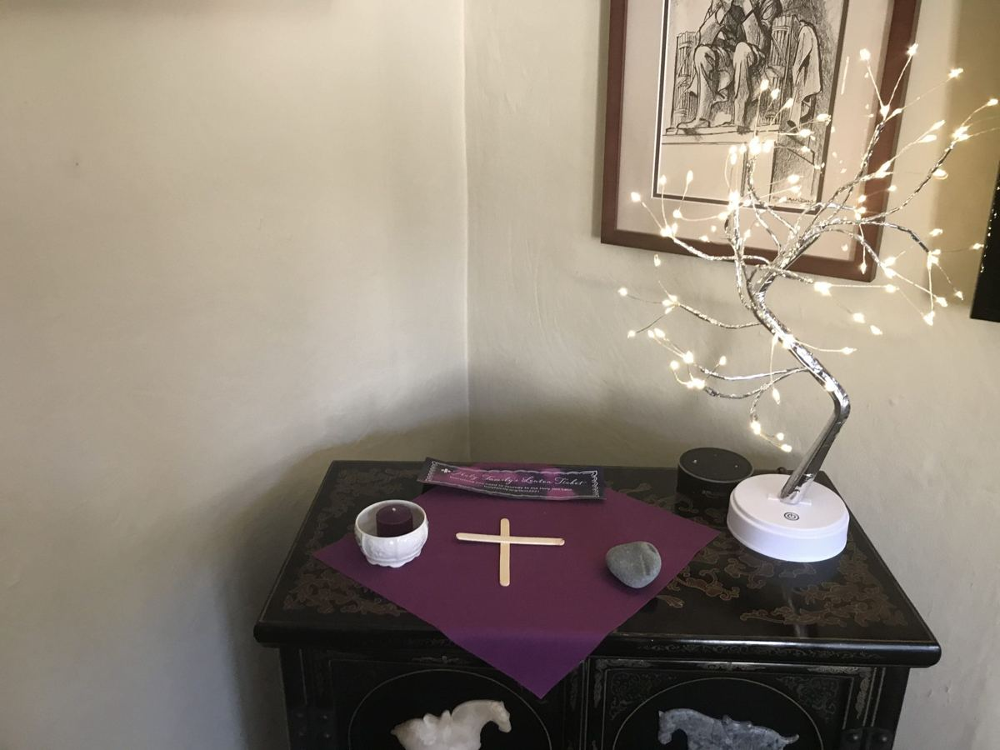

Creating a Space for God
Creating a Prayer Space at home reminds everyone in your Domestic Church that prayer is an important part of everyday life. A Prayer Space reminds us of God’s presence and helps to make a connection between church and home.
- HOW TO: Pick a central corner of your home.
- INVOLVE YOUR CHILDREN: They can make pictures or homemade decoration, pick a favorite book, add a toy that holds meaning to them..
- BASIC ITEMS: Candle, Cross, Bible, Statue, Rosary
- SPECIAL DAYS ADD: Flowers, Book, Pottery, Pictures, Prayer Cards, Statues, Salt, Holy Water, Oil, a Branch of a tree or bush.
- LITURGICAL OR HOLIDAY SEASONS add color: Green for seasons of Epiphany and post-Pentecost (Ordinary Time) Blue or violet for Advent White for Christmas and Easter Purple for Lent Red for Pentecost.